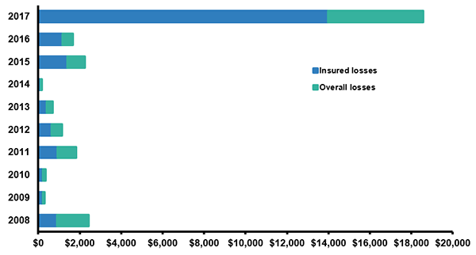

"What happens nowadays, because people live everywhere— they let a fire burn less than 5% of the time."
Joe Carlson, a firefighter with the Oregon Department of Forestry, agreed that the system runs incredibly smoothly: “When you show up on a fire, the first thing I do is like, alright, what radio frequencies are we on? Who's in charge? Who's my boss and his boss, and then once you figure that out, you just get plugged in and they give you a little assignment and you go to work."
According to Dr. Peterson, agencies use computer models that are designed to assess risk to natural resources such as trees, water, air quality, animals, infrastructure, and, of course, us. “What happens nowadays,” Peterson says, “because people live everywhere— they let a fire burn less than 5% of the time.”
Keep in mind, this 95% suppression occurs on federal lands. On nonfederal lands, suppression policies are 100% in almost every state, because too many resources are at risk.
Significant Wildfires of the last 10 years
Wildfires are becoming more unpredictable, costly and deadly as our climate changes and more resources are at risk of burning. The map below shows some of the most significant wildfires within the last ten years.
Navigating the Complexities of the Wildland-Urban Interface
Our landscape is changing as we are suburbanizing forests and wildlands. Construction is increasing in previously undeveloped areas, and whole communities are surrounded by dry fuel build-up. This intersection of human development and natural terrain is called the Wildland-Urban Interface (WUI) and currently constitutes 10% of the United States, and 33% of all homes.
This is why California's Camp Fire was so deadly, it began in the Wildland-Urban Interface and spread down into more urbanized areas.
California's Camp Fire started in the WUI and rapidly spread. Credit: Google Maps.
Wildfire policy is becoming increasingly complex as the WUI puts a record amount of property at an extreme risk of being consumed by flames—-about 1.8 million homes.
Other strategies have been employed to try to decrease the amount of build-up before a wildfire hits, like thinning and prescribed burning, but it's more difficult in the WUI.
Wildfire mitigation is happening at both state and federal levels, and it’s effective in lowering the severity of the fire. But the sheer amount of forested land makes it so the chances are slim that the exact treated area will burn. Research done at the University of Colorado-Boulder shows that less than 1% of treated land has ever experienced a wildfire.
Wildfire Mitigation on federal lands
(In millions of acres rounded to the nearest thousand)
Source: National Interagency Fire CenterThe above chart shows the amount of acres that have been treated on federal land by controlled burning (fire), tree thinning (mechanical), and seeding and herbicides (other). It shows the same for land treated in the WUI.
Dr. Peterson estimates that probably 10-15% of what needs to be done has been done. “Federal and state agencies are already doing what they need to do, but they can’t do it fast enough.”
“The scale issue is really important, but that gets overlooked by lawmakers,” said Dr. Schoennagel, who was a leading contributor in the research. “Changing the rise in area burn, that’s not going to change by thinning and prescribed burns. "It’s actually really ineffective on a large scale.”
The root of the problem is the rising temperatures, it’s the amount of carbon and methane that we put into the atmosphere. According to research done at the University of Idaho, 50% of the increase in area burned by wildfires in the Western U.S. can be attributed to climate change.
Scientific consensus on climate change shows long-term trends of rising global temperatures. Credit: NASA/NOAA
“If we want to talk about reversing or even stabilizing the trends, then that [climate change] is where we are going to look.” Schoennagel said.
"All federal policy focuses on trees. We need to focus on adaption.”
On our current trajectory, stabilizing the temperature of our planet seems like a long, uphill battle. Which is why Dr. Schoennagel offers a more immediate solution—adapting our communities to the changing climate.
“But—if we are talking about how we can help humans survive fires more, the solution is how we design, protect, and maintain. There is very little policy on that. All federal policy focuses on trees. We need to focus on adaption.”
This means restricting development in high fire-prone areas, retrofitting old homes and building new ones to withstand ignition, and performing thinning and prescribed burns near communities—something that many people aren’t too keen on.
Firefighters already do controlled burns adjacent to the Urban Interface, as they try to target areas that are at a high risk to burn, but won't be dangerous to those living in the WUI.
Oregon Firefighter Joe Carlson also mentioned that prescribed burning and thinning is not most effective in helping people survive fires: "Do we need more burning, less burning? We need more firewise."
Firewise is a program that teaches people how to landscape around their homes. Carlson says if they see someone with propane tanks, cars and a cedar roof then firefighters can't do anything about it; it's not defensible.
"The loss of property is much more prevalent in California. In Oregon and Washington we didn't lose anything of value this year. We lost some barns, some sheds, some outhouses. We don't lose a lot of stuff up here because we don't have the same amount of people living in the woods and the people that live in the woods in Oregon, they know what they're doing.
"People in California, if we're going to generalize, they live out in the woods, they don't have resources or experiences, there's Santa Ana winds, everything is working against them."
Wildfire losses in the United States
(2008-2017)
Source: Data collected by The Washington Post 1) Adjusted for inflation by Munich Re based on the Consumer Price Index.
Top 10 Most Wildfire Prone States, 2017
| Rank | State | Households at high or extreme risk from wildfires |
|---|---|---|
| 1 | California | 2,044,800 |
| 2 | Texas | 715,300 |
| 3 | Colorado | 366,200 |
| 4 | Arizona | 234,600 |
| 5 | Idaho | 171,200 |
| 6 | Washington | 154,900 |
| 7 | Oklahoma | 152,900 |
| 8 | Oregon | 148,800 |
| 9 | Utah | 133,100 |
| 10 | Montana | 133,000 |
Source: Verisk Wildfire Risk Analysis used data from FireLine
Our fire policies try to make room for the scientific consensus that wildfires are beneficial but as we have hotter, more unpredictable fires and more resources at risk, we funnel more money toward wildfire suppression.
“By the middle of the 21st century, there will be two or three times more acres burned,” Dr. Peterson says, citing it as a low estimate—some analyses predict a 500% increase.
Yellowstone experienced a rebirth after the fires of 1988, like it was designed to do. The old lodge pole pine forest had survival strategies built into its genetics. However, with the continuing uptick in massive fires, forests are starting to behave differently.
"Whether that's good news or bad news? Well that's based on human values."
Researchers at Colorado State University found that Rocky Mountain forests have decreasing tree regeneration after a massive fire. Before 2000, 70% of sites that experienced wildfire returned to their same density. More recently, its 46%, and some sites didn’t regenerate at all.
Dr. Peterson said, “Having large areas of land burning at high intensity—things will change, in terms of dominance of different animals and plant species, where people can recreate, extremes in temperature—but whether that’s good news or bad news? Well that’s based on human values.”